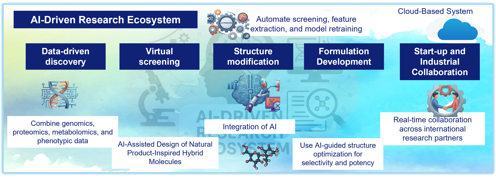

We integrate artificial intelligence across the entire drug discovery pipeline, from activity prediction to formulation feasibility, accelerating the path from molecule to medicine.
From target definition to a translational decision package — every step connected, every output auditable.

Schedule a discovery call with our team, no commitment, just a conversation.